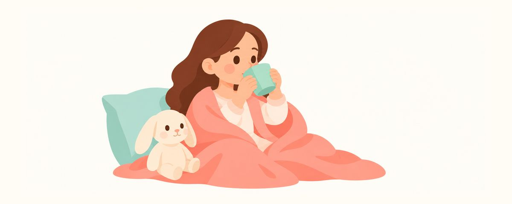

Jus anak maksimal 120 mL sehari, dalam gelas saat makan: mengubah kebiasaan gelas sedotan
Untuk usia 1–3 tahun, jus maksimal 120 mL sehari dalam gelas biasa saat makan. Mengapa jus 100% pun merugikan gigi dan cara mengubah kebiasaan membawa-bawa gelas sedotan.
Sekilas
- Usia 1 sampai 3 tahun: jus maksimal 120 mL (4 oz) sehari
- Air putih untuk haus, buah utuh untuk gizi
- Jangan biarkan gelas sippy berisi jus dibawa-bawa sepanjang hari
Jus buah dibuat dari buah, jadi rasanya pasti baik untuk tubuh. Jika diberikan dalam gelas sedotan, anak mau minum dan tidak tumpah. Namun, bagi gigi, seberapa banyak dan bagaimana cara minum jus cukup penting. Berikut patokan saat memberi jus dan cara mengubah kebiasaan yang sudah terbentuk.
Mengapa jus berbeda dengan buah?
Jus tidak sama dengan buah. Saat buah diperas, seratnya hilang dan gulanya tetap ada. Jadi bagi gigi, jus sama saja dengan air gula. Jus buah 100% tanpa tambahan gula pun sama saja, karena gula alami dari buah tetap ada di dalamnya.
Masalah yang lebih besar adalah cara minumnya. Jika anak membawa gelas sedotan atau botol berisi jus sepanjang hari dan terus menyesapnya, gigi terus terendam gula. Setiap kali gula masuk, mulut menjadi asam, dan selama itu gigi sedikit demi sedikit larut. Jika diminum sekaligus lalu selesai, air liur punya waktu untuk memulihkan gigi, tetapi jika diminum sedikit-sedikit terus-menerus, waktu itu tidak ada.
American Academy of Pediatrics membatasi jus untuk usia 1–3 tahun maksimal 120 mL sehari, dan menyatakan bahwa jus bukan minuman yang wajib. Mulai usia 4 tahun, 120–180 mL sehari masih boleh, tetapi tetap hanya saat makan. Cukupi cairan dengan air putih dan gizi dengan buah.
Ada juga kesalahan yang sering terjadi.
- "Jus 100% kan tidak apa-apa": meski tanpa gula tambahan, bagi gigi tetap gula.
- "Anak tidak mau minum air putih, jadi jus saja": sebaiknya tetapkan bahwa yang diminum saat haus adalah air putih. Jika keluarga minum air putih bersama, anak pun ikut.
- "Diberikan sedikit-sedikit jadi tidak terlalu merugikan": bagi gigi, sedikit tetapi sering justru lebih merugikan.
- "Jus dalam gelas sedotan untuk menenangkan saat tidur": saat tidur air liur berkurang, jadi inilah waktu yang paling merugikan.
Jus hanya saat makan, coba seperti ini
- Jika memberi jus, batasi maksimal 120 mL sehari. Jika jumlah harian sudah ditentukan, anak juga lebih jarang merengek.
- Berikan dalam gelas biasa saat makan atau camilan. Sebaiknya diminum sambil duduk lalu selesai. Jangan dibawa-bawa dalam gelas sedotan atau botol.
- Jangan dibawa ke tempat tidur. Jika anak perlu gelas saat tidur, isi dengan air putih saja.
- Untuk haus berikan air putih, untuk gizi berikan buah. Jika anak haus, berikan air putih kapan saja. Buah lebih baik dimakan utuh daripada diperas menjadi jus.
- Seluruh keluarga minum air putih bersama. Anak meniru orang dewasa. Jika keluarga bersama-sama membiasakan minum air putih alih-alih minuman manis, semuanya jauh lebih mudah.
Jika kebiasaan membawa-bawa jus sudah terbentuk, ubah perlahan, jangan dihentikan sekaligus. Jika jus dicampur air sehingga makin encer sedikit demi sedikit lalu dihentikan, anak tidak terlalu menolak. Buat aturan yang singkat dan jelas: "Air putih kapan saja, jus hanya saat makan." Jika setiap bepergian Anda hanya membawa botol air minum, jus pun berkurang dengan sendirinya.
Setelah aturan diubah, di hari-hari pertama anak mungkin merengek minta jus. Saat itu, jawab dengan tenang dengan kalimat yang sama, misalnya "jusnya diminum waktu makan, ya". Tidak menaruh jus di tempat yang terlihat di rumah juga membantu. Jika aturan yang sama juga dibagikan kepada kakek-nenek yang ikut mengasuh atau daycare, anak tidak terlalu bingung.
Pertanyaan yang sering diajukan
Bolehkah bayi di bawah satu tahun diberi jus?
American Academy of Pediatrics menganjurkan agar bayi di bawah satu tahun tidak diberi jus. Jika memberi buah, lebih baik diberikan utuh daripada diperas menjadi jus.
Apakah gelas sedotan tidak boleh dipakai?
Gelas sedotan itu sendiri tidak bermasalah. Jika isinya air putih, tidak apa-apa. Yang bermasalah adalah jika diisi jus atau susu lalu dibawa-bawa sepanjang hari atau dibawa ke tempat tidur.
Jika diencerkan dengan air, bolehkah diminum sepanjang hari?
Meski diencerkan, tetap ada gulanya, jadi jika diminum sedikit-sedikit terus-menerus, tetap merugikan gigi. Gunakan pengenceran hanya sebagai proses untuk berhenti, dan tetapkan waktu minumnya saat makan.
Bolehkah susu diberikan dalam gelas sedotan?
Susu juga mengandung gula, jadi jika disesap sepanjang hari, tidak baik bagi gigi. Susu juga diminum saat makan, dan di antara waktu makan berikan air putih.
Apakah harus langsung sikat gigi setelah minum jus?
Jika diminum saat makan, cukup minta anak minum seteguk air putih. Yang lebih penting adalah tidak melewatkan sikat gigi 2 kali sehari dengan pasta gigi berfluoride, terutama sebelum tidur.
Kapan perlu ke dokter gigi
- Terlihat bercak putih atau bagian keruh seperti kapur pada gigi depan
- Muncul noda atau bintik cokelat pada gigi
- Anak mengeluh ngilu saat makan atau minum yang dingin
- Kebiasaan gelas sedotan sudah berlangsung lama sehingga Anda khawatir dengan gigi berlubang
Dapatkan di waktu yang tepat
Masukkan tanggal lahir anak Anda (atau perkiraan tanggal persalinan) di aplikasi Kalender Gigi, dan artikel-artikel ini akan datang sebagai pengingat tepat saat dibutuhkan. Gratis, tanpa daftar.
Sumber
Informasi dalam artikel ini bersifat edukasi umum dan tidak menggantikan perawatan gigi profesional. Konsultasikan kondisi anak Anda dengan dokter gigi.